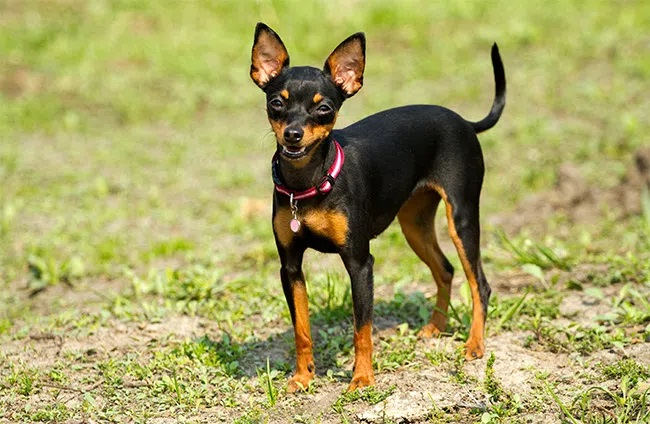

A disposição que os Pinschers possuem vão contagiar todos ao seu redor. O Pinscher segue a risca a expressão popular “tamanho não é documento”. Conhecido pela sua energia inesgotável e seu latido, o cãozinho de – no máximo – 30 centímetros, demonstra toda a sua braveza quando percebe algo de errado ao seu redor. Diferente de outras raças de pequeno porte, o Pinscher é um excelente guardião. Seus grandes olhos escuros estão em alerta a todo momento. Mesmo que seja a escolha de muitos moradores de apartamentos e casas compactas, o pet adora espaço para correr e gastar toda a sua energia.
Apesar do tamanho pequeno dos cachorros da raça Pinscher, eles possuem um temperamento marcante: são ousados, corajosos, curiosos e extremamente apegados às pessoas que convivem junto com eles. Está no DNA do cãozinho não se intimidar em hipótese alguma e, como um grande guardião, sempre está atento para avisar seus tutores sobre qualquer barulho incomum ou até mesmo uma invasão em seu lar.
Assim como a relação com outros pets, à primeira vista, o Pinscher não se mostra tão amigável com estranhos ou crianças. Porém, não há segredo. Com uma socialização do cãozinho desde cedo, essa questão será resolvida rapidamente. Muito brincalhão, realizar diversas brincadeiras com o pet pode ser uma das formas mais simples de socialização do animal com outras pessoas. Caso o seu cãozinho apresente dificuldades, é importante contar com um profissional para auxiliar no treinamento de interação.
Fizemos um gráfico nivelando de 0 a 5 as características da raça, veja a baixo!
O Pinscher é reconhecido pelo seu tamanho pequeno e sua pelagem curta, lisa, densa e brilhante. Para evitar a queda de pelos por toda a sua casa, escove diariamente o seu pet com acessórios específicos para a raça. A pelagem pode ser unicolor: vermelho cervo ou vermelho castanho. Ou bicolor: preto e castanho. Compacto, o Pinscher possui um crânio achatado. A arcada dentária afiada é em formato de tesoura. O focinho, preto, é pontudo. As orelhas são pontudas e dobradas. Os olhos ovais são escuros e sempre em alerta. O cãozinho, em sua vida adulta, pode ter de 25 até 30 centímetros e com o peso entre 4 e 6 quilos.
Para manter a higiene do Pinscher, utilize produtos específicos para cachorros durante o banho, evitando substâncias prejudiciais à saúde. Limpe regularmente itens do cachorro, como casinha, caixa de transporte, lençóis e brinquedos de pelúcia. Visitas regulares ao veterinário são essenciais para prevenir problemas de saúde comuns na raça. Apesar da saúde vigorosa do Pinscher, a luxação patelar é um problema recorrente, exigindo tratamento, às vezes cirúrgico, para correção quando necessário. Esses cuidados contribuem para a saúde geral e bem-estar do seu cãozinho.
Desde filhotes os cãozinhos já são ativos e precisam gastar toda a energia que possuem. No entanto, o tutor precisa estar atento para que esses pequeninos não se machuquem enquanto estão se divertindo. Além disso, o seu tamanho, quando filhote, exige atenção redobrada do seu tutor para que ele não escape por qualquer brecha que encontrar!